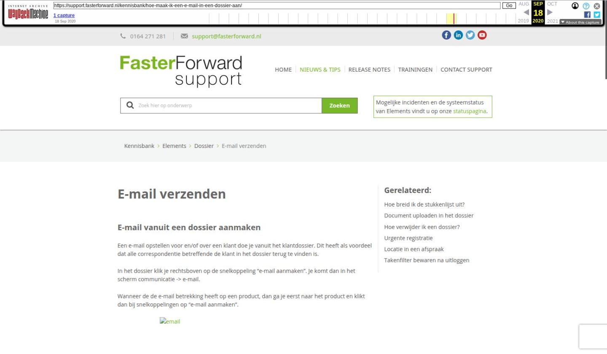

E-mail vanuit dossier versturen

Tekstinhoud
E-mail verzenden
E-mail vanuit een dossier aanmaken
Een e-mail opstellen voor en/of over een klant doe je vanuit het klantdossier. Dit heeft als voordeel dat alle correspondentie betreffende de klant in het dossier terug te vinden is.
In het dossier klik je rechtsboven op de snelkoppeling "e-mail aanmaken". Je komt dan in het scherm communicatie -> e-mail.
Wanneer de de e-mail betrekking heeft op een product, dan ga je eerst naar het product en klikt dan bij snelkoppelingen op "e-mail aanmaken".
E-mailbox: wanneer je recht hebt tot meerdere e-mailboxen, dan kan je ook vanuit meerdere boxen e-mailen. Je hebt één standaard e-mailbox, dit staat in 'mijn instellingen' ingeregeld. Daaronder vind je de 'Aan', 'CC'en 'BCC'.
Standaardteksten: hier selecteer je een standaard tekst. Indien bij de standaard teksten een omschrijving meegegeven is, wordt deze in de onderwerpregel geplaatst na selecteren van de standaard tekst.
Prioriteit: het is daarnaast mogelijk om een bepaalde prioriteit toe te kennen aan de e-mail en om een leesbevestiging te vragen.
Handtekening: indien er een standaard handtekening onder de gebruiker aanwezig is, kan deze hier geselecteerd worden.
Bijlagen toevoegen: er zijn meerdere manieren om documenten aan de e-mail toe te voegen, namelijk: vanuit het dossier, vanuit een map of bureaublad slepen naar het betreffende veld of klikken op het veld en document vanuit de map selecteren. Deze bijlagen kunnen na het verzenden gekoppeld worden aan het dossier door het vinkje daar aan te zetten.
Concept e-mail
Indien je een e-mail als concept op wilt slaan, klik je hiervoor rechtsboven op de groene knop 'concept'. In het e-mailoverzicht vind je jouw concept e-mail terug. De regelkleur is oranje en 'Concept' staat dik gedrukt.
Het kan zijn dat je de e-mail op een later tijdstip af wilt maken. Je kunt de e-mail dan als "Concept" opslaan. Klik rechtsonder het witte tekstvak op 'Opslaan als concept'. De e-mail wordt automatisch als concept opgeslagen wanneer het typen langer dan 5 minuten duurt. Je krijgt tussentijds de melding dat de 'Autosave' is gelukt (of niet)
E-mail inplannen
Ook is het mogelijk om een e-mail in te plannen. Klik hiervoor op het pijltje naast 'Verzenden' en klik op 'Verzend later'. Nadat hiervoor gekozen is, kun je een voorgestelde tijdstip/dag kiezen of deze zelf invullen. De e-mail wordt met het gekozen verzendmoment als concept opgeslagen, nadat er op de 'bevestig' button is gedrukt.
Tekstveld
Het onderwerp van de e-mail kan vrij ingevuld worden of er kan gebruik gemaakt worden van een tag die het standaard e-mail onderwerp invult. Dit kan bijvoorbeeld het dossiernummer zijn of indien er een product gekoppeld is, een offertenummer. Wanneer er links een standaard tekst geselecteerd wordt en met de + toegevoegd is deze hier zichtbaar.
Registratie
Aan de e-mail kan een registratie gekoppeld worden. Zo kan de besteedde tijd aan het dossier worden bijgehouden.
Wanneer de tekst gereed is en de e-mail verzonden kan worden, klik je op 'Verzenden' links onder. De e-mail wordt verstuurd.
De verzonden e-mail staat nu onder Communicatie->E-mail.
E-mail vanuit algemene e-mailbox aanmaken
Naast het versturen vanuit een dossier is er de mogelijkheid om een e-mail te versturen vanuit de 'algemene' e-mailbox. Hiervoor ga je naar het e-mail icoon (envelop) links bovenaan de pagina. Voor een nieuwe e-mail klik je op 'Opstellen'. Daarna werkt de module zoals beschreven bij e-mail vanuit dossier aanmaken.
Laatste update: 22 juni 2020
Tagged: aanmaken, concept, e-mail, email, mail, versturen, verzenden
Was deze informatie nuttig?
Ja Nee